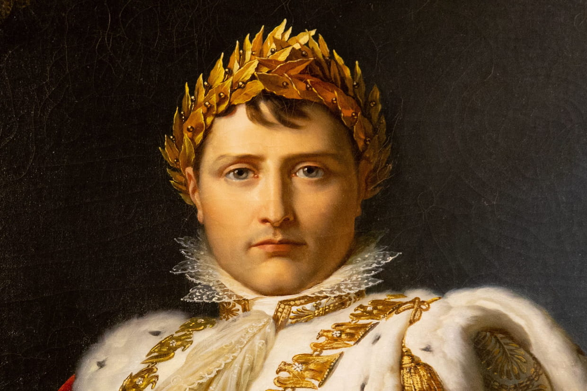
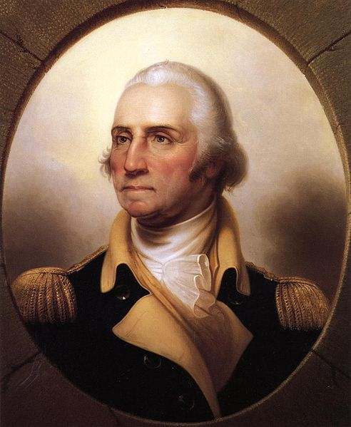
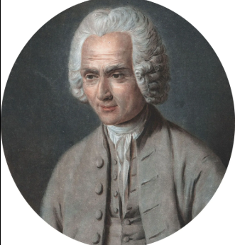
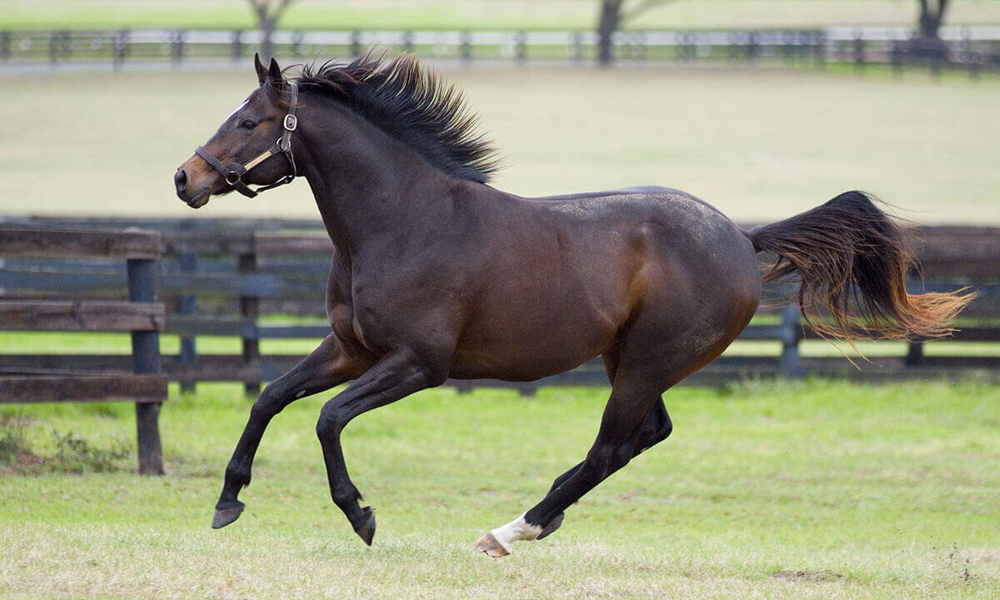
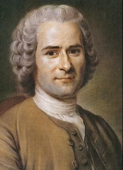

Napoleon...

George...

Rouseau...
 George Washington
George Washington

Itt van Nelson ahogy boldogan vágtat a birtokon mitán most értem haza egy tárgyalásrol. Ő a kedven lóvam mert mindig higgatd és az átlagnál is okkosab mindig halgat a nevére és mellettem van minden kalandban.

Tekintsetek rám ezen a képen: egy ember, aki nem fél szembenézni önmagával, bármennyire fájdalmas is az igazság. Eddigi utam során Genfből elszökve, inasként és kóborlóként kezdtem, majd Párizs csillogó, de romlott szalonjaiban kerestem a helyem, ahol rájöttem, hogy a civilizáció csak ront az emberen. Megírtam az Értekezéseket és az Emilt, amivel kivívtam a hatalmasok haragját, így most menekülnöm kell azok elől, akik nem bírják az őszinte szót. Elhagytam Franciaországot, és itt, a hegyek között, magányomban próbálok megbékélni a sorsommal és Istennel. Nem vágyom már másra, csak arra a belső szabadságra, amit a természet és a saját tiszta lelkiismeretem adhat meg nekem.